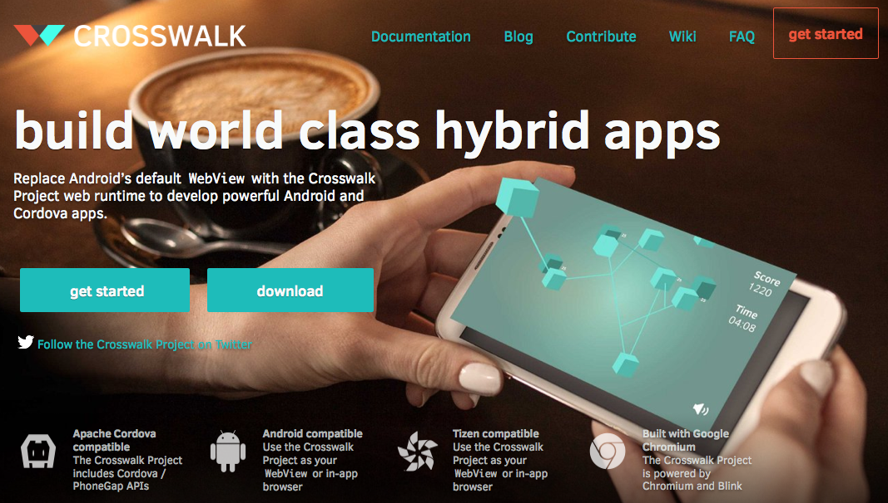

Mobile HTM5 apps that can compete with native
Nolan Lawson
HTC Magic, 2009

→
→
- Android
- iOS
- Windows Phone
- Blackberry
- Firefox OS
- Windows
- OS X
- Linux
- Chrome OS
- etc.
Nexus 6, 2014

- Animations
- Android
- Frameworks
- Offline-first
Animations smooth as 
Hardware-accelerated CSS animations
|
translate3d
|
|
|
scale3d
|
|
|
rotate3d
|
|
|
opacity
|
|
|
top / left
|
|
|
top / left / translateZ(0)
|
|
|
translate3d
|
|
|
|
The Android issue
Android is the new IE

Pick your frameworks carefully
Mobile-optimized frameworks
Offline-first
Offline-first libraries
- PouchDB
- LocalForage
- YDN-DB
- Hoodie
- Lawnchair
- RemoteStorage
- MakeDrive
- IndexedDBShim
pouchdb-lru-cache
+
blob-util
=
easy offline images
var db = new PouchDB('my-images');
db.initLru(5000000); // store 5 MB max
function getImageSrc(src) {
return db.lru.get(src).then(function (blob) {
return blobUtil.createObjectURL(blob); // cached
}).catch(function () { // not cached
return blobUtil.imgSrcToBlob(src).then(function (blob) {
return db.put(src, blob); // cache it
}).then(function () {
return src;
});
});
}
- Use 3D CSS animations
- Use Crosswalk for Android
- Choose your frameworks wisely
- Go offline-first